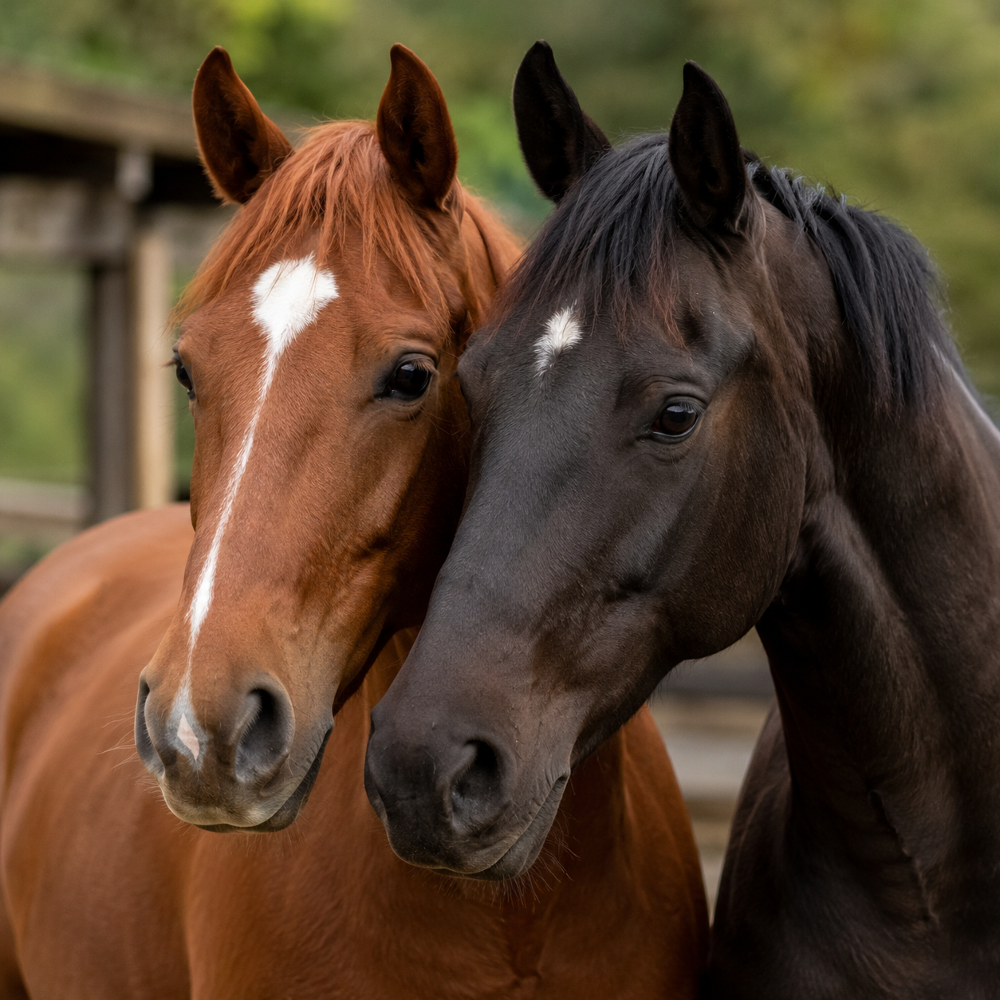
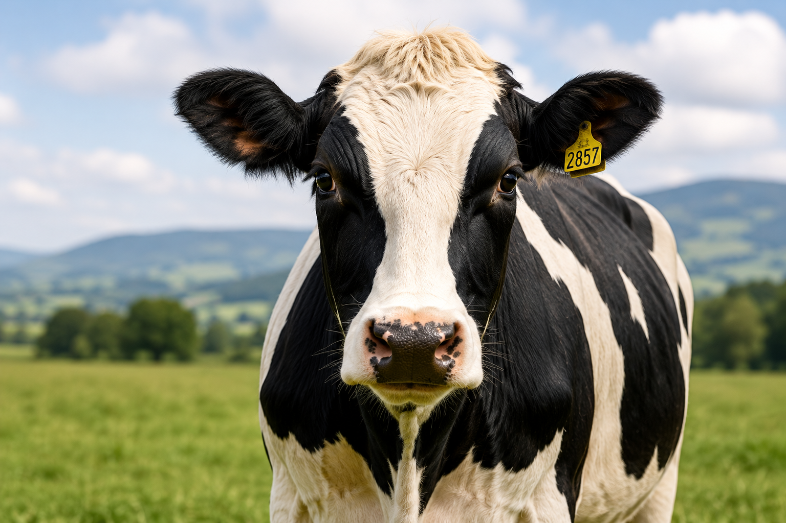
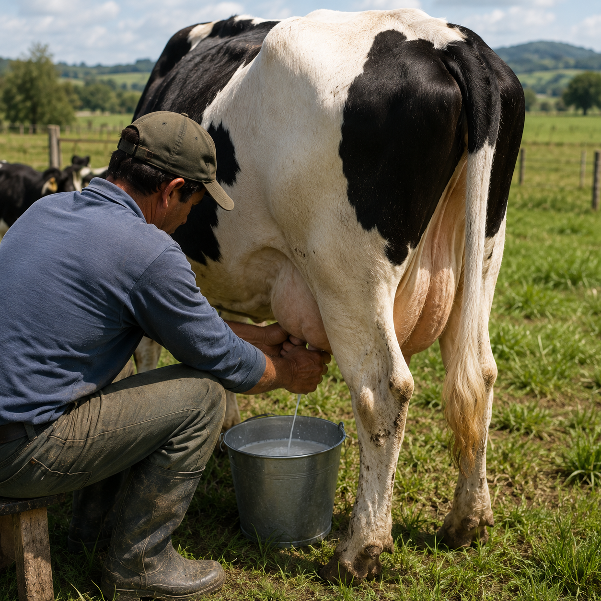

Catálogo consultivo agro-veterinario
Insumos veterinarios para animales domésticos y de producción
Soluciones en salud, reproducción, nutrición y equipamiento animal con asesoría directa por WhatsApp.
Quiénes somos
REDIMAG conecta productos veterinarios confiables con asesoría clara.
Acompañamos a veterinarios, productores y responsables de animales domésticos y de producción con un catálogo organizado por líneas técnicas y una ruta de contacto directa por WhatsApp.
Líneas de producto
Elige la línea que quieres explorar

Fármacos y medicamentos
Cuidado, tratamiento y soporte de la salud animal.
VER PRODUCTOS
Reproducción animal
Manejo reproductivo y apoyo técnico productivo.
VER PRODUCTOSNutrición
Bienestar, rendimiento y soporte nutricional.
VER PRODUCTOS
Accesorios y equipamiento
Herramientas e implementos de operación veterinaria.
VER PRODUCTOS
Catálogo consultivo
Explora todo el catálogo REDIMAG por línea y necesidad
Navega productos por línea y especie, revisa la ficha interna y consulta por WhatsApp solo cuando tengas claro el producto que necesitas.
EXPLORA NUESTRO CATÁLOGO